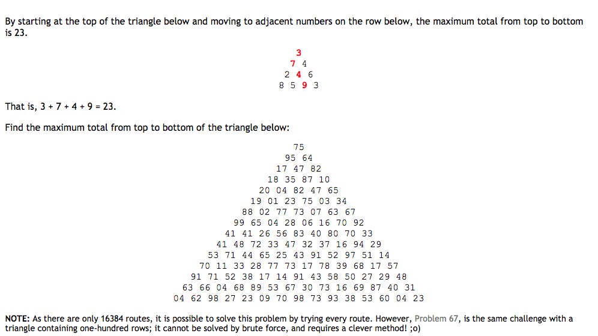

[프로젝트 오일러] 최대 경로합 문제 (18/67)
May 1, 2018 00:00 · 1348 words · 3 minute read
문제

18번 문제는 위와 같이 숫자로 이루어진 삼각형의 꼭대기부터 바닥까지 이어진 경로중 가장 합이 큰 경로를 구하는 문제이다. 단, 아래로 이동할 때에는 아래로 인접한 양 옆의 숫자로만 이동할 수 있다. 67번 문제도 동일한 문제이며 차이점은 삼각형의 높이가 100으로 커졌다는 것이다.
18번 문제에서는 삼각형의 높이가 15이므로 모든 경로의 수가 16,384(2^14)개밖에 되지 않아 Brute force로 풀어도 무방하나, 67번 문제에서는 그 경로가 무려 633,825,300,114,114,700,748,351,602,688(2^99)개나 존재하기 때문에 Brute force로는 불가능하다.
풀이
알고리즘의 아이디어는 간단하다. 위에서부터 아래로 내려갈 때에는 바닥까지의 경로중 어떤 경로의 합이 가장 클지 알 수 없기 때문에 아래로 인접한 숫자중 큰 숫자로 계속 이동하는 경로가 가장 합이 큰지는 보장할 수 없다.
그러나 이를 반대로 생각하여 바닥에서 시작하여 위로 이동하면서 그 합이 더 큰 경로로만 이동하면 합이 가장 큰 경로를 구할 수 있다. 왜냐하면 아래에서부터 합이 가장 큰 일부 경로를 고정시키면 삼각형의 꼭대기부터 좀 전에 구한 일부 경로의 꼭대기까지 이어진 경로중 최대 경로만 구하여 합하면 되기 때문이다. 이렇게 되면 합이 가장 큰 일부 경로 외의 모든 경로는 계산 대상에서 제외된다.
1. 75
2. 95 64
3. 17 47 82
4. 18 35 87 10
3번 라인에서 시작해보자. 3번의 17에서 4번 라인까지의 경로는 (17, 18)과 (17, 35)가 존재한다. 이 두 경로중 더 큰 경로는 (17, 35)이다. 따라서 꼭대기부터 17까지의 경로들은 항상 4번 라인의 35로만 이동하면된다. 마찬가지로 3번 라인의 모든 숫자들에 대해서 이 계산을 수행할 수 있다. 47에 대해서는 (47-87), 82에 대해서는 (82-87)이 가장 크다. 계산을 수행한 후에는 상위 라인의 숫자들을 아래 라인에서부터의 더 큰 경로의 합으로 대체한다.
1. 75
2. 95 64
3. 17 47 82
\
4. 18 35 87 10
1. 75
2. 95 64
3. 17 47 82
\
4. 18 35 87 10
1. 75
2. 95 64
3. 17 47 82
/
4. 18 35 87 10
이렇게 최대 경로를 계산한 뒤에 트리는 다음과 같이 바뀐다.
1. 075
2. 095 064
3. 052 134 169
\ \ /
4. 018 035 087 010
가장 꼭대기까지 동일한 계산을 수행해보자.
1. 075
2. 229 233
\ \
3. 052 134 169
\ \ /
4. 018 035 087 010
1. 308
\
2. 229 233
\ \
3. 052 134 169
\ \ /
4. 018 035 087 010
최대 경로의 합은 308이며 그 경로는 (75, 64, 82, 87)이 된다.
즉, 가장 바닥의 바로 위 라인에서 시작하여 각 숫자를 아래 라인의 양 옆의 인접한 숫자중 더 큰 숫자와 합하면서 위로 올라가다보면 합이 가장 큰 경로를 구할 수 있게 된다.
아래에서부터 각 라인간 인접한 숫자의 합을 계산하면서 올라가기 때문에 한 연산당 계산은 2번씩 이루어지며 연산은 삼각형에 존재하는 숫자들의 개수만큼 수행된다. 따라서 n을 삼각형의 높이라고 할 때 총 연산수는 n(n-1)가 되며 알고리즘의 복잡도는 O(n^2)이 된다.
18번 솔루션
triangle = """
75
95 64
17 47 82
18 35 87 10
20 04 82 47 65
19 01 23 75 03 34
88 02 77 73 07 63 67
99 65 04 28 06 16 70 92
41 41 26 56 83 40 80 70 33
41 48 72 33 47 32 37 16 94 29
53 71 44 65 25 43 91 52 97 51 14
70 11 33 28 77 73 17 78 39 68 17 57
91 71 52 38 17 14 91 43 58 50 27 29 48
63 66 04 68 89 53 67 30 73 16 69 87 40 31
04 62 98 27 23 09 70 98 73 93 38 53 60 04 23
"""
triangle_leaves = []
for line in triangle.strip().splitlines():
triangle_leaves.append([int(i) for i in line.split()])
n = len(triangle_leaves)
for i, leaves in enumerate(triangle_leaves[-2::-1]):
for j, leaf in enumerate(leaves):
left = triangle_leaves[n-i-1][j]
right = triangle_leaves[n-i-1][j+1]
triangle_leaves[n-i-2][j] += max(left, right)
print(triangle_leaves[0][0])
최대 경로합 = 1074
67번 솔루션
코드는 동일하며 삼각형 데이터를 파일에서 가져옴
with open('data/p067_triangle.txt', 'r') as f:
triangle = f.read()
triangle_leaves = []
for line in triangle.strip().splitlines():
triangle_leaves.append([int(i) for i in line.split()])
n = len(triangle_leaves)
for i, leaves in enumerate(triangle_leaves[-2::-1]):
for j, leaf in enumerate(leaves):
left = triangle_leaves[n-i-1][j]
right = triangle_leaves[n-i-1][j+1]
triangle_leaves[n-i-2][j] += max(left, right)
print(triangle_leaves[0][0])
최대 경로합 = 7273
- DynamoDB 배치 작업 재시도 구현 (Exponential Backoff)
- IDC에서 AWS로 Redis 데이터 이전하기
- [Go로 구현하는 블록체인] Part 7: 네트워크
- [Go로 구현하는 블록체인] Part 6: 트랜잭션 2
- [Go로 구현하는 블록체인] Part 5: 주소
- [Go로 구현하는 블록체인] Part 4: 트랜잭션 1
- [Go로 구현하는 블록체인] Part 3: 영속성 및 CLI
- [Go로 구현하는 블록체인] Part 2: 작업 증명
- [Go로 구현하는 블록체인] Part 1: 기본 프로토타입
- 시간에 의존하는 코드를 위한 테스트 작성하기